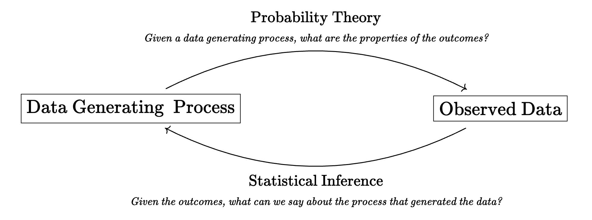

[1] 1 2 1 1 1 2 2 2 1 0Data, sampling, and probability
That time we learned a little bit about probability and simulation. This stuff is important, we can’t really understand statistics without probability, as hinted at in Figure 1.

To make this a little bit more concrete, here’s a story about three coin flips:
A data generating process (DGP) is just a simplified story about how data are produced and recorded, which we usually denote with some parameters. In this case we have the data \(X\) (number of heads) and two parameters that control its probability distribution: \(n = 3\) and \(p = 0.5\).
This is how we write this same DGP in mathematical form:
\[ X \sim \text{Binomial}(n = 3, \ p = 0.5) \tag{1}\]
In R, we can simulate this process using the following function:
rbinom(n, size, prob): drawnsamples from the binomial distribution with some \(n\) (size) and some \(p\) (prob). Yes, this transition from \(n\) tosizeis confusing!When \(n = 1\) (or
size = 1), we usually call this a “Bernoulli distribution.”
The sample space \(\Omega\) for this three coin flip DGP—the set of all possible outcomes—is as follows:
\[ \Omega = \begin{Bmatrix} HHH \\ HHT \\ HTT \\ TTT \\ TTH \\ THH \\ THT \\ HTH \end{Bmatrix} \]
In this example we are recording the number of “heads.” This is our random variable. A random variable \(X\) assigns some number to the underlying sample space.
And so we have the following:
\[ \Omega = \begin{Bmatrix} HHH \\ HHT \\ HTH \\ THH \\ TTH \\ THT \\ HTT \\ TTT \end{Bmatrix} \to \begin{Bmatrix} 3 \\ 2 \\ 2 \\ 2 \\ 1 \\ 1 \\ 1 \\ 0 \end{Bmatrix} \tag{2}\]
Assigning a probability to these outcomes is relatively straightforward because the coin is fair ( \(p = 0.5\) ), and so each of these outcomes is equally likely. Thus, the probability of each of the outcomes in \(\Omega\) is \(1/8\). Assigning probabilities get trickier when the coin is not fair, \(p \neq 0.5\). We will ignore this issue for now!
Glaring intensely at Equation 2 should convince you of the following statements:
\[ \begin{align} \Pr(X = 3) &= 1/8, \\ \Pr(X = 2) &= 3/8, \\ \Pr(X = 1) &= 3/8, \\ \Pr(X = 0) &= 1/8 \end{align} \]
This is exactly what the dbinom() does for us.
[1] 0.125 0.375 0.375 0.125Note. Doing statistical inference simply means that we start with the recorded data and then ask questions about the potential DGPs, including the potential values of corresponding parameters!